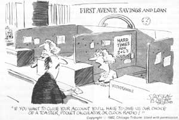

RECESSION NOTEBOOK
“I wouldn't worry none about the fall, son . . . it's the landin' that'll git ya!"
Well, it hasn't really taken very long at all. Here we are not halfway into 1982, and even the Pollyannas who-in the closing months of 1981-were telling us that (if we were willing to cinch up our belts just one more notch) everything would soon be all right are beginning to tune their throats for shouts of panic.
Indeed the signs that we could be in for times that're a good bit harder than any the last 12 years of inflation have produced are everywhere you look. Consider, if you will, the following excerpted quotations . . . both from "established" business publications and from exclusive financial newsletters (many of which gave early warnings of the troubles we're facing today ).
THE WALL STREET JOURNAL, March 8, 1982 (from "The Outlook"): " 'The economic situation continues to deteriorate on almost a weekly basis,' Evans Economics, a Washington-based consulting firm, says in its latest survey."
R.E. McMASTER, JR., The Reaper, Dept. TMEN, P.O. Box 39026, Phoenix, Arizona 85069, 44 issues a year, $225: "Some 14 states owe the federal government $6.7 billion that was borrowed for unemployment compensation. These large states, including Pennsylvania, Michigan and Illinois, are requesting that Congress 'suspend payment requirements.' In other words, some $6.7 billion in loans from the federal government to the states is about to be forgiven or eaten by us, the taxpayers."
C.V. MYERS, Myers' Finance and Energy, Dept. TMEN, Suite 418, Peyton Building, Spokane, Washington 99201, 14 issues, $200: "Review the record! In 1960 government used 1/5 of the total savings, leaving 4/5 for business and other purposes. In 1981, government used 4/5 of the total savings, leaving only 1/5 for business and other purposes. So whereas in 1960, 4/5 of the total savings could be used for business and other purposes, in 1981 only 1/5 could be used for other purposes. THE SITUATION HAS TOTALLY REVERSED ITSELF IN TWENTY YEARS."
JULIAN M. SNYDER, International Moneyline, Dept. TMEN, 25 Broad Street, New York, New York 10004, 52 times a year (approximately), $282: "Former believers in an imminent economic 'recovery' are running for the hills, and cries of ‘Depression!' now fill the media air. . . . Eventually you will have to learn to comprehend not just the well-known phenomenon of raging inflation, or just the less well-known phenomenon of a depression, but both phenomena at the same time."
THE WALL STREET JOURNAL, February 22, 1982: "Several of the nation's leading economic soothsayers are beginning to worry that the economy could collapse under the burden of high interest rates, plunging the nation into the first depression since the 1930's."
NEWSWEEK, March 8, 1982 (quoting Fred Fields, manager of a credit counseling center in Detroit): "The average person we see nowadays has three house payments due, $315 in gas bills, $180 in Edison [ utility ] bills, $150 in water bills, a phone bill as high as $300-and he's waiting for work."
THE WALL STREET JOURNAL, March 9, 1982 (from Robert W. Merry's discussion of the budget dilemma facing Congressional Republicans): ". . . persistently high interest rates are spreading the kind of fear and frustration that in Congress translate into two words: Do something. Right now."
R.E. McMASTER, JR., The Reaper: "Now that the economic crisis has descended upon us with its full fury, Congress, finally, is aware of it. Crisis management is all Washington knows, and Washington is about to panic over the economy."
R.E. McMASTER, JR., The Reaper: "$71 million of our money has just gone to bail out the multinational banks. The Reagan administration has now committed to honor its guarantees to bail out $71 million of loans that Poland owes to hotshot American banks. . . . The question becomes, 'Would you have loaned your money to Poland?'
Answer: Of course, not. Then why did these banks loan our money to Poland?"
(Or, as Jerry Garcia, of the Grateful Dead, put it, "I don't know, but I've been told if the horse don't pull, you got to carry the load. I don't know whose back's that strong . . . maybe find out before too long.")
NEWSWEEK, March 15, 1982 (from the cover article -think about that, a little-titled "How Safe Are Your Savings?"): "As a group, the nation's savings and loan associations and savings banks lost a staggering $6.4 billion [ our emphasis ] in 1981-far more than the losses of the beleaguered auto and airline industries combined. Faced with the prospect of even larger losses this year, hundreds of thrift institutions will simply not survive."
HOWARD J. RUFF, The Ruff Times, Target, Inc., Dept. TMEN, P.O. Box 2000, San Ramon, California 94583, 48 issues a year, $145: "... I suggest you watch your newspapers and your television news very closely and let it burn deep into your memory. You are watching the early stages of one of the greatest crises and most difficult tests the nation has experienced since the Civil War."
L.T. PATTERSON, The Patterson Strategy Letter, Dept. TMEN, P.O. Box 37432, Cincinnati, Ohio 45237, 12 issues a year, $149.95: "Reagan economic policies are doomed! By election time, 'Reaganomics' will be a thoroughly discredited 'program! Paul Volcker will have caused the economy to virtually collapse! . . . Unemployment will be up another million or two persons, and conservatives in the Senate-and the House-will be thoroughly defeated in the November election. . . ."
HOWARD J. RUFF, The Ruff Times (in an open letter to President Reagan): "If you yield to the demand to raise taxes in the middle of a recession, you could plunge the country into a depression with domino-like bankruptcies that could leave the economy in shambles."
R.E. McMASTER, JR., The Reaper. "The harsh truth could be that the federal deficit will approach $180 billion, that the government will devour 100% of the national savings pool, and that the Fed may still have to monetize a noteworthy portion of the deficit."
Now it's pretty clear that the sources we've quoted aren't all exactly in agreement, either about the seriousness of our present economic situation or about just when it's likely to worsen. There is, however, a remarkable consensus on the opinion that things are a good bit worse than they were a few months back, and are probably going to get a good bit more unpleasant before they get better.
There's all the more reason, then, for us all to accelerate our personal campaigns to get out of the credit economy and take steps -including learning gardening, carpentry, and other self-reliance skills and, yes, even stocking up on storable food and barterable items-to protect our families if the worst-case scenario does, in fact, come to pass. After all, a good many people with a wide range of personal economic convictions seem to agree that the handwriting is on the wall . . . and-if the most pessimistic of them are right-there may be precious little time to read it before that wall collapses.
|
 |
|
|